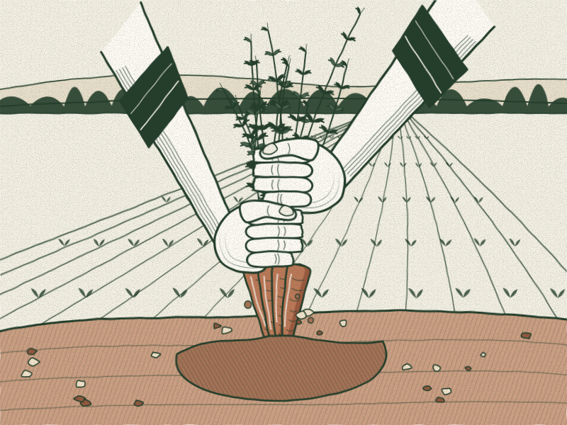

Horta · Beira Baixa
Horta da Ribeira
Uma horta fictícia na Beira Baixa, com talhões de couve, cenoura e tomate regados pela ribeira que lhe dá o nome. As cenouras são arrancadas à mão e atadas em molho com a rama, tal como chegam ao mercado.
Ver produtos da Horta da Ribeira